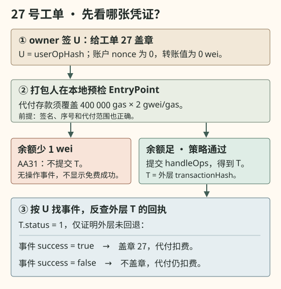

本页目录
先修：10 · 交易序号、11 · Gas 与费用、12 · 回执与确认、13 · ABI、18 · 日志索引、21 · 消息签名。这里没有真钱、公共钱包或收费服务。用标准 EVM 上的 ERC-4337 参考实现 v0.7.0 做可重复的本机实验；它能在具备相应基础设施的 L2 上使用，不是 OP Stack 特有的系统交易，也不演示 L2 的数据发布费或跨层最终性。
别让一个 txHash 列承担两种承诺
用户授权「用我的智能账户给工单盖章」，不是「用我的外部账户把一笔普通交易广播到链上」。在这条 4337 路径上，可以把客服手里的字段拆成两层：
| 身份 | 本单实际做什么 | 不能凭它证明什么 |
|---|---|---|
账户持有人 owner 与智能账户 sender |
前者在本地签请求；后者是已部署的 SimpleAccount 代理，按自己的验证逻辑认签名，执行 execute(desk, 0, record(27)) |
owner 与 sender 不是同一地址；签过字不代表入块，也不是给 bundler 一把私钥 |
打包人 bundler |
收到 UserOperation（一份含调用、费用、nonce、签名的请求），选择操作、形成外层 handleOps 交易，用自己的外部账户提交并向网络付外层 gas |
一个包可以有多次操作；交易哈希不是任何一个操作的哈希。获准进入操作池也不等于已上链 |
入口合约 EntryPoint |
对账户验签、检查序号与预付资金，请 paymaster 判断是否代付。通过后调账户，记录逐操作事件，结算给 beneficiary（本例为打包人） |
普通回执的 status 只讲整笔外层交易有没有回退。要判断具体操作，还要读入口产生的事件 |
代付合约 paymaster 与业务合约 TicketDesk |
前者限制资助哪个账户、什么调用、最多多少钱；资金来自它在入口合约的存款。后者才决定能否盖章 | 代付不是免 gas，不保证业务成功；余额够也不是业务授权。业务是否生效要按其具体语义核实 |
在数据库里，可把一次操作的检索键记作 (chainId, entryPoint, userOpHash)，其上链位置另存 (blockHash, transactionHash, logIndex)。这不是普适的业务幂等键：重新报价、换 nonce 重签会得到不同操作；发生重组还要让原位置失效。工单号是另一列业务标识，不用 27 充当链上 nonce。本地只提交一项便于追踪，不意味着两个哈希一一对应。


哪些字节获准使用这张代付券？
本实验固定早于 7702 的 v0.7 格式，不混用其他版本的 ABI 或签名域。账户预先创建，故 initCode=0x。先用 ABI 编码业务调用 record(uint32) 的参数 27，再将这串字节放入 SimpleAccount.execute(address,uint256,bytes)，目的地址是本次部署的工单台，转出原生币为 0 wei。把这个完整的 callData 交给 TicketSponsor，只认可事先算好的完整字节串的哈希；不仅比较前四字节的函数选择器。因此即使是同一个账户，请求 record(28)、换接收方、改转账值或改成批量执行，都不在这张券的范围内。
另外三道边界都在链上：只有指定 EntryPoint 可以调代付验证；限定一个智能账户，完整 nonce 必须为 0（本例 key=0、sequence=0）；入口传给代付验证的最大预付额不得超过合约常量 CAP_WEI。实际 nonce 由入口按账户与 key 管理，即便一次已验证的操作执行失败也用掉序号 0。下次想用新序号花同一张券，不会因为存款还有余额就获准。反之，整包验证失败并回退时序号不会被占用。这里的「一次」以这条链的规范状态为准，不是跨链或跨重组的承诺。
最后区分两种钱：EntryPoint.balanceOf(paymaster) 是可被本次预扣的 deposit，不是 paymaster 地址的普通 ETH 余额；某些公共操作池要求的质押 stake 则是另一个条目，不拿来抵本单的 gas。实验先以一笔独立的准备交易 depositTo(paymaster) 注资，不把它当成外层操作交易。余额只是支付能力；有人额外注资也不会抬高合约写死的单券上限。这套限制只针对这次封闭实验及其已知的账户/工单实现；现实中的可升级账户还要核对实际代码、升级权限和策略有效期，不要把识别 calldata 当成对未来执行效果的保证。
先算准入金额，再算结算金额
v0.7 的 PackedUserOperation 把账户验证/执行限额各占 128 位塞进 accountGasLimits，优先费/最高费各占 128 位塞进 gasFees，都是前者在高位。paymasterAndData 在本例是地址 20 字节、代付验证限额 16 字节、postOp 限额 16 字节，共 52 字节，没有额外数据。代付验证返回空 context，所以没有后续 postOp 回调；最终支出以 EntryPoint 的事件为准。
| v0.7 预付计算的项目 | 本次输入（gas） | 用在哪里 |
|---|---|---|
verificationGasLimit |
150000 | 账户验证阶段的限额 |
callGasLimit |
100000 | 账户执行业务调用的限额 |
preVerificationGas |
65000 | 操作分摊的外围开销；本地固定的教学输入，不是实时估价 |
代付 verificationGasLimit / postOpGasLimit |
85000 / 0 | 代付验证 / 代付后处理 |
四项与零项相加是 400000 gas。本例把 maxFeePerGas 与 maxPriorityFeePerGas 都设为 2 gwei/gas = 2000000000 wei/gas。于是入口先要求 400000 × 2000000000 = 800000000000000 wei = 0.0008 ETH。少一 wei 即拒绝，恰等于可以过资金检查，但仍须过授权和范围检查。不要拿预估的实际消耗来代替准入所需预付额。
在本单正常或业务冻结的路径，事件里的 actualGasCost = actualGasUsed × 2000000000，未用的预付金额退回代付存款。v0.7 这里会在计量中考虑未用执行 gas 的惩罚，不要把 actualGasUsed 解释成工单函数单独消耗的 gas。若改变费率，本实现通常按 min(maxFeePerGas, maxPriorityFeePerGas + block.basefee) 计价；本例两字段相等，所以可以按常数复算。外层网络费才是 receipt.gasUsed × receipt.effectiveGasPrice；它与该操作归集的费用口径不同，即使只有一个操作也不能用前者覆盖后者。
数值边界：128 位是打包宽度，不是 v0.7 入口实际允许的上限。入口对这七个 gas 限额/费率字段作按位 OR，要求各值不超过 2^120 − 1，超过即 AA94。因此五个 gas 项求和小于 5 × 2^120、再乘最高费率小于 5 × 2^240 < 2^256；前述预付公式不会在该检查后绕回。本地更窄：预算只接受整数 [0, 800000000000000] wei，工单号只接受 uint32（0 至 4294967295），合约只代付其中的 27。Java 端用 BigInteger 解析、先限范围再拼字段，勿用有符号 long 表示任意链上费用字段，也不要对超界输入截高位。
在回环链上从一个哈希追到另一个
在仓库根目录使用 Bash、Python 3.11 标准库、lsof、curl、openssl、Cast/Anvil 1.7.1、solc 0.8.28。需要工具时按第 13 课固定版本安装。prepare.sh 只下载 @account-abstraction/contracts@0.7.0 官方发行包并核对 npm 发布的 SHA-512；缓存齐全后，例程只作离线核验，不会自动下载。没有 Node.js、钱包插件、付费 RPC 或公共 bundler 依赖。
export PATH="${XDG_CACHE_HOME:-$HOME/.cache}/chain-course/m04/bin:$PATH"
export FOUNDRY_SOLC="$(command -v solc)"
unset ANVIL
bash labs/m07/userop/prepare.sh
WORK=$(mktemp -d)
python3 labs/m07/userop/run.py > "$WORK/open.txt" && cat "$WORK/open.txt"
每次都在空闲的 127.0.0.1:18727 起全新 Anvil（31337，Cancun），节点随机生成临时测试账户，退出即关闭；不接受外部 RPC。部署官方包内 EntryPoint 与 SimpleAccountFactory 的创建字节码，由工厂创建单签账户；只把课程的 TicketDesk 与 TicketSponsor 用 solc 编译。本地入口地址来自部署回执，不是公共链的固定地址，更不能直接拿去配置主网。
顺着例程 run.py读四步：
setup()读回owner()、entryPoint()及券上限。NETWORK留下准备块的高度/哈希；ROLES列出本次临时角色。本例第一名节点账户兼做测试注资人、打包人和受偿人，第二名只给操作签名；paymaster 和智能账户仍是不同的合约地址。build_bundle()先将签名留空，调 本次 EntryPoint 的getUserOpHash(op)得 U。v0.7 先承诺除签名外的操作字段（动态字段先哈希），再把内部哈希、入口地址和链号作 ABI 编码并哈希。这个版本的SimpleAccount对 U 使用 Ethereum Signed Message 的 32 字节消息前缀验签，因此向本地personal_sign传 U 的字节，不是字符0x…的 UTF-8，也不是照抄新版的 EIP-712 签名。拿到 U 只说明可以索引这份请求，不证明有人已经接单。trace()在准备块上先用eth_call演算完整handleOps([op], beneficiary)。拒绝时没有提交；通过后才调用eth_sendTransaction。这里只代做组包、预检和提交，不运行 bundler 服务，没有操作池、广播、信誉/质押检查、竞争排序或公共 RPC 接纳保证。该eth_call也不会提交或持久化业务的写入；如果业务回退被入口捕获，它仍可能成功返回。- 查日志时以
address=本次入口、topics[0]=keccak256(UserOperationEvent(bytes32,address,address,uint256,bool,uint256,uint256))、topics[1]=U定位。读出这条日志的transactionHash（T）再调eth_getTransactionReceipt(T)；核对同一块哈希、logIndex、其余两个索引地址和数据。非索引数据恰好四个 32 字节字，依次是nonce, success, actualGasCost, actualGasUsed。最后读回回执所在块的代付存款和工单状态。若使用支持 4337 的 bundler，可用eth_getUserOperationReceipt(U)，其中receipt仍然是整包的交易回执；普通eth_getTransactionReceipt(U)查不到不是「交易已失败」。
默认输出的判据（不预填本轮哈希、块号、实际消耗）：LINK 的两个哈希不同；在 RAW_RECEIPT 留存的原始 JSON 里查得到 T，且日志第一项索引参数正是 U。FEE 满足 depositBeforeWei − depositAfterWei = actualGasCostWei > 0。RESULT RECORDED outerStatus=1 opSuccess=true nonceAfter=1 recorded=27 才能给本单勾选「已盖章，由活动方代付」。本次 L2 网络最终性不是实验观察项。
换一个输入：是拒单，还是付了费没盖成？
下面各轮新开一条链，不复用上轮的账户或哈希。
python3 labs/m07/userop/run.py --mode held > "$WORK/held.txt" && cat "$WORK/held.txt"
rc=0; python3 labs/m07/userop/run.py --budget-wei 799999999999999 > "$WORK/short.txt" || rc=$?
cat "$WORK/short.txt"; test "$rc" -eq 3 && grep 'RESULT REJECTED_DEPOSIT' "$WORK/short.txt"
rc=0; python3 labs/m07/userop/run.py --ticket 28 > "$WORK/scope.txt" || rc=$?
cat "$WORK/scope.txt"; test "$rc" -eq 3 && grep 'RESULT REJECTED_SCOPE' "$WORK/scope.txt"
| 改变的事实 | 文件内应找到的证据 | 对客服怎么说 |
|---|---|---|
27 号工单被冻结 --mode held |
有 U、T，outerStatus=1 而逐操作 success=false；另一个入口事件 UserOperationRevertReason 中是工单台的 TicketHeld()。nonceAfter=1 recorded=0，存款差额仍是正的实际费用 |
打包成功，业务失败，已扣代付费。脚本退出 0 表示正确辨认这个结果，不是工单成功；不沿用旧 nonce 重发 |
| 代付存款少 1 wei | RAW_REVERT 是节点返回的 FailedOp(0,"AA31 paymaster deposit too low") 编码，不是回执。退出 3；outerTx=absent opEvents=0 depositWei=799999999999999 nonce=0 recorded=0 |
此打包器预检拒绝这项请求；没有对应操作的外层交易可查，不虚构 T。链上仍有部署与注资交易 |
| 资金足，但请求工单 28 | FailedOpWithRevert 中是 AA33 reverted 及代付合约的 OutsideVoucher()；退出 3，存款未变 |
拒绝原因是代付范围，不是换一台 RPC 或多存钱就能解决 |
再将 --budget-wei 设为 0，也应是 REJECTED_DEPOSIT，此时余额确实已空；而 --budget-wei 800000000000001 会在启动节点之前被参数检查拒绝（退出 2），不是链上拒绝。超时、端口冲突、工具失败、未知 revert 或没有可核对的日志都不能归作上述任何业务状态。公开服务一时查不到哈希，也不能据此断定从未提交；本地「未提交」有脚本控制流和同一节点的前后状态共同支持。
Safe、4337、7702 是三道不同的问题
| 产品问题 | 可选机制 | 选型时仍须回答 |
|---|---|---|
| 财务、运营、审计三位持有人，谁有权批准？ | Safe 的常规所有者交易路径可设 2/3 threshold；两位不同且当前有效的 owner 确认同一笔 Safe 交易才够，重复同一人的签名不算两个 | 达到阈值只是授权条件，不生成免费 gas，也不保证目标执行。已启用的 module 可能走另一条执行路径，需单独审查权限。Safe 可通过匹配模块与 4337 组合；本例 SimpleAccount 不是 Safe |
| 用户不持原生币，如何提交、如何限额并对账？ | 4337：账户验签，bundler 提交，EntryPoint 检查与结算，paymaster 按策略代付 | 查操作事件与外层回执，谁获得资助、预算谁承担、什么情况拒绝。无需把阈值或某种特定账户实现写死在打包器里 |
| 要保留已有 EOA 地址，让调用该地址时能执行账户逻辑？ | EIP-7702：在支持该升级的链上，EOA 的授权元组可使其代码记录委托指示器，所指代码在该 EOA 的上下文运行；无需搬去一个新合约地址 | 授权绑定链号（规范也允许 0，不能视为单链授权）、实现地址和 nonce，不是对每个业务目标/金额的一次性许可。有效委托会跨交易保留，须更改或撤销；即使当次随后的执行失败，已处理的委托也不因此回滚。它本身不设 2/3 阈值，不提供本券的额度，更不自动启用 4337 服务 |
若需求只是「两人盖章才付款」，先设计授权与恢复流程；若是「替新人付一次 gas」，先写清代付范围及拒绝证据；若要延用老地址，再审查委托实现、授权展示、撤销与目标网络支持。三者可以在兼容的版本里配合，却不是互斥的三种钱包品牌。本课的 Cancun 链与 v0.7 用例不执行 7702 授权，也没有测试 Safe 模块，不能把流程对照表贴成兼容证明。
独立作业：给客服两张不会报反的凭条
第一位客服只给你一份被冻结工单的 RAW_RECEIPT，不许直接引用 RESULT 行。保存原始 JSON，标出 U 所在日志的发件合约、索引位置、T、块哈希；按 ABI 数满四个数据字，读出 actualGasCost。单凭这张回执能证明「目标合约没有记录工单」吗？补取本轮同块的 GETTERS 读数，并用 FEE 的前后存款之差复算费用。答案应能同时说明「status=1」「事件 success=false」「有正费用」「工单台读数仍为 0」四者并不矛盾；最后一项不能只凭没有业务日志。
第二位客服把券余额设为 0 wei，仍请求 27。独立留存准备块及入口、U、原始预检错误、退出码与结束时的余额/nonce/日志数；再让余额恰等于预付额，只把工单改为 4294967295。两次都应没有 T，但第一份结论依赖 AA31，第二份依赖带 OutsideVoucher() 的 AA33；两次都不能写「交易失败，已收 gas」或「免费成功」。若把工单再加 1，则已不是能编码进 uint32 的请求。提交一张两行拒绝凭条，在费用栏明确区分「没有提交这次操作」与「本地部署准备没有成本」——后者不是本实验的结论。
核验原文
- ERC-4337：Account Abstraction Using Alt Mempool 与 ERC-7769：bundler 的 JSON-RPC。看角色、操作池与双层回执；通行规范可能演进，不用最新版哈希域回算 v0.7 的数据。
- npm 的 0.7.0 发行记录与完整性摘要、同版 EntryPoint.sol、IEntryPoint 事件 ABI、SimpleAccount 的验证与执行。对照
getUserOpHash、_getRequiredPrefund、_validatePaymasterPrepayment和_postExecution，不要只据错误码猜扣款对象。 - Safe 官方：owners、threshold、常规交易与模块；EIP-7702：委托元组的处理与持久性。重点对照「谁有权批准」「哪段代码在哪个地址的上下文运行」与「谁付费」。